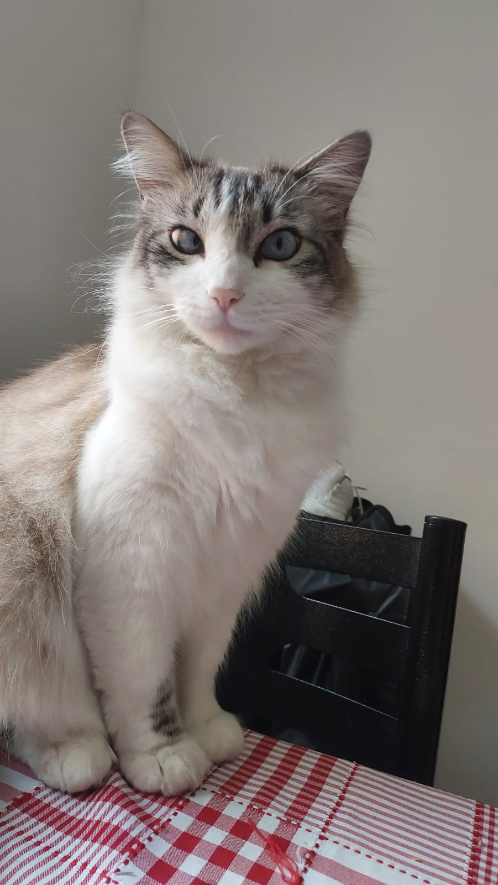
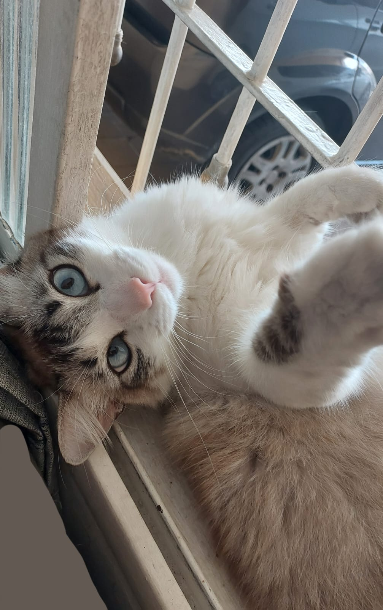
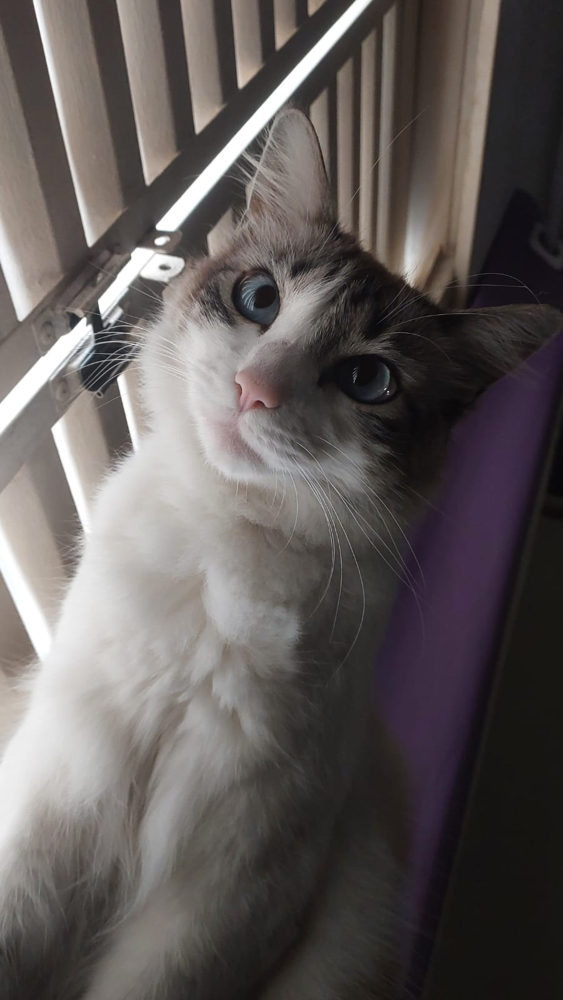
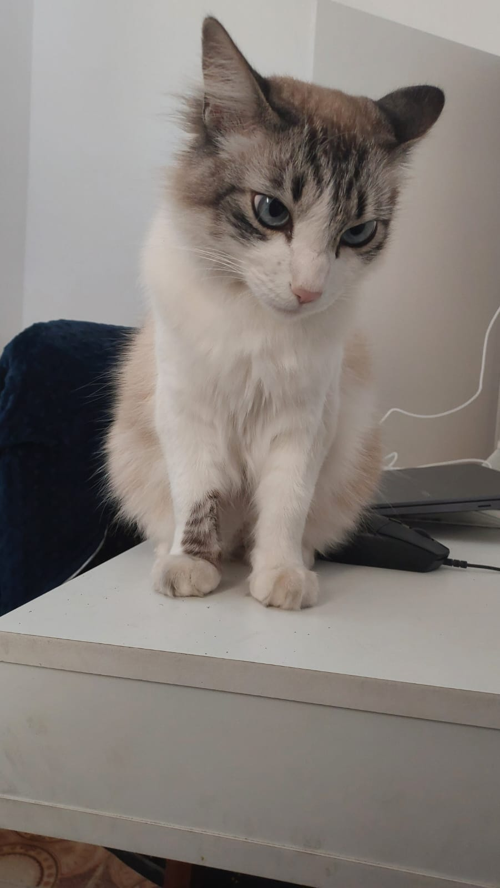
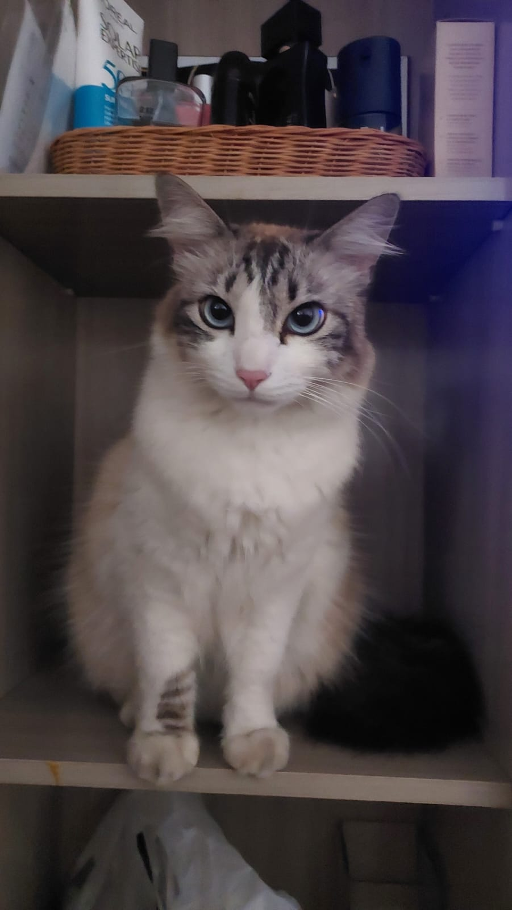
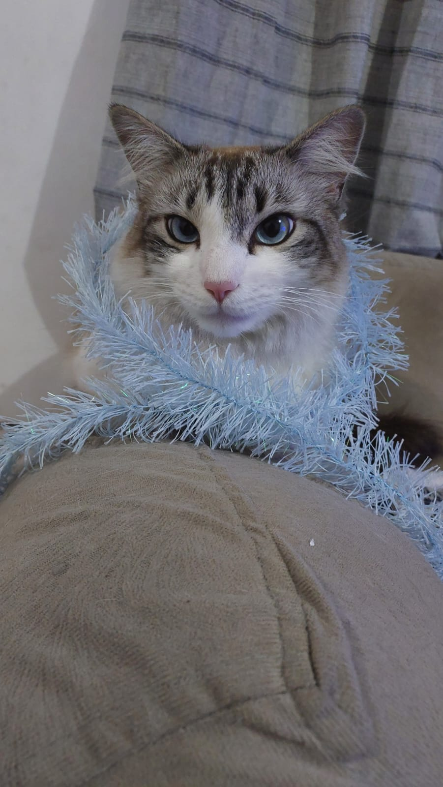

♡ · ♡ · ♡
Algumas passagens duram pouco, mas deixam marcas que ficam para sempre.
Minha história com Zeus começou quando a gata da minha madrinha teve filhotes. Meu pai ficou encantado por ele desde o primeiro momento, dizia o tempo todo o quanto era lindo e insistiu para que eu fosse conhecê-lo. E não deu outra: como toda boa criança, me apaixonei e decidi que queria adotá-lo. Foi assim que Zeus chegou à minha vida!


Com o passar do tempo, Zeus desenvolveu uma personalidade um tanto quanto intensa. É um gato estressadinho, de pavio curto e nem sempre muito paciente. Mas, apesar disso, sua beleza conquista qualquer pessoa que cruza seu caminho. Mesmo não sendo o gato mais carinhoso do mundo, tem seu jeitinho próprio e singelo de demonstrar afeto.
Talvez Zeus não seja daqueles gatos que vivem pedindo colo ou carinho, mas isso não significa que sua presença seja menos especial. A simples companhia dele já faz toda a diferença e consegue melhorar meus dias. Afinal, aprendi que o amor também está nos pequenos gestos e na companhia silenciosa de quem faz parte da nossa vida.


